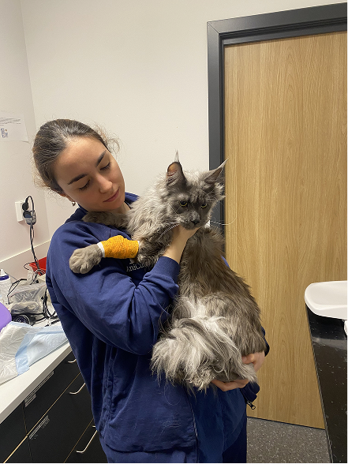
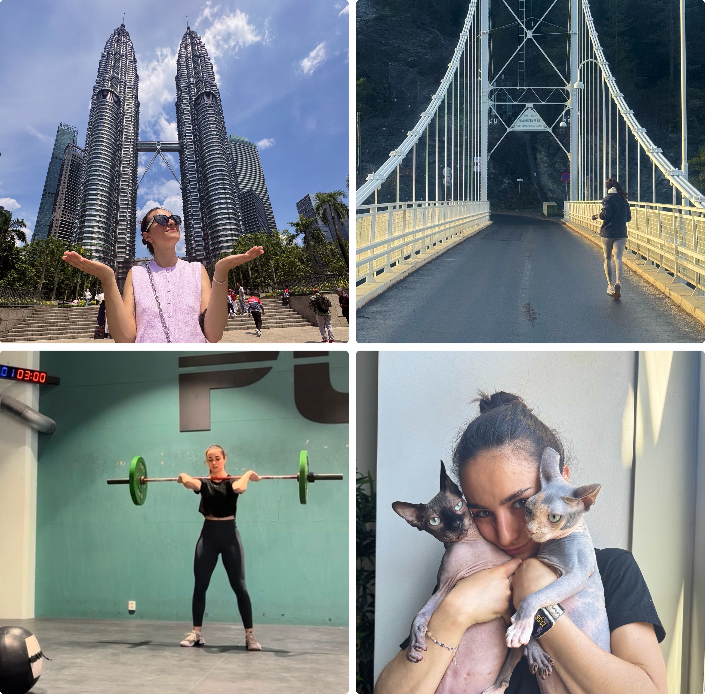

About me
Noticing
the small
details.
I am a UX & UI designer with a calm, product focus approach.
With a background in veterinary, I bring care and attention to details to my designs. Because the little things make the biggest difference.
My story timeline
Personal training
Horse riding internship
Veterinary nursing
UX/UI design
Before design, I studied personal training, where I became interested in how people move, build trust and change through small habits. During my internship, I worked closely with horse riding and horse training, and that experience made me want to understand animals more deeply. That led me to veterinary nursing.

What care taught me about design
Working with animals taught me to notice what people don’t always say.
Small details could change everything: a gesture, a routine, a reaction, or a tiny sign that something wasn’t right.
Today, I bring that same attention to detail into the way I design digital products.
How I design today
I’m still early in my design career, but I see that as part of my strength since I’m curious, organised, eager to learn.
I like organising messy information, creating clean interfaces, and I am also interested in building design systems.
I am specially interested in products connected to real life like pet care, lifestyle, fitness, health and travel.

My real life
I’m from Madrid, but I live in Oslo.
Outside design, I train CrossFit, run, travel whenever I can, and share my life with two cats who have definitely influenced my interest in pet care products.
That’s what I bring into design: care, curiosity, and a habit of noticing the small details that make an experience feel better.
Still learning, still experimenting, and always looking for ways to make things clearer, kinder, and easier to use.
Thanks for taking the time to get to know me
Want to talk about design, pets, products or future opportunities?